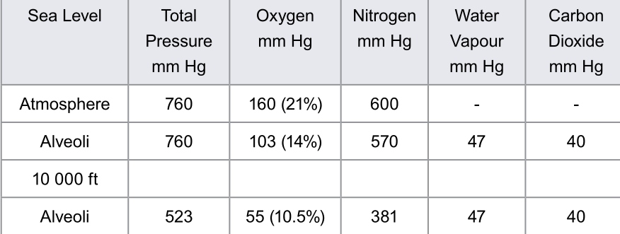
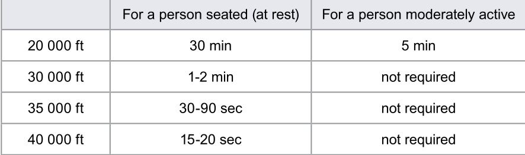
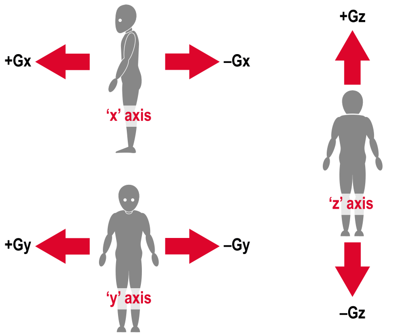

Hypoxia, Hyperventilation, Acceleration
Hypoxia
- Hypoxia is a reduction in the bodies' oxygen supply
- Sometimes called Anoxia
- Anoxia is the total absence of oxygen supply
- Occurs when the body is short of hemoglobin oxygen saturation
- Hypoxia in aviation is Hypoxic Hypoxia
- The amount of oxyhemoglobin depends not on the percentage of oxygen in the air, but amount of oxygen in the lungs
- This means low external air pressure can cause hypoxia as can a change in proportion of the gasses in the lung
- The amount of oxygen in the air can be described as its partial pressure in mm Hg
- Sea level pressure is 760 mm Hg, but only 160 mm Hg is oxygen
- Therefore 160 mm Hg is the partial pressure of oxygen at sea level
- As altitude increase partial pressure of oxygen falls with the atmospheric pressure, but not at a constant rate
- Rate of change of pressure is greatest as we climb from sea level, and decreases with altitude
- The effect of lowing external air pressure is exacerbated by the relatively constant partial pressures of carbon dioxide and water vapor
- At sea level though oxygen makes up 21% of the atmosphere, in the lungs its only 14%
- Partial pressure of oxygen in the lungs in 103 mm Hg
- As altitude increase the partial pressure of oxygen in the atmosphere falls
- and Proportion of oxygen in the atmosphere remains the same
- As well partial pressure of water vapor and carbon dioxide in the lungs remain the same
- reducing partial pressure of oxygen in the lungs still further
Physical Thresholds
- Human body is extremely sensitive to reduction in the partial pressure of oxygen in the lungs
- Hypoxia effects are divided into 3 thresholds, exact height of when you will experience such symptoms varies
- Altitudes are
- Reaction Threshold (beyond 7000 ft)
- See a definite reaction from the body with lower levels of oxygen saturation in the blood
- Performance of complex tasks may be impaired
- Slight increase in breathing and heart rate is detected
- Disturbance Threshold (10-12000ft)
- Breathing produces significantly lower sats
- Body's defense mechanism begins to generate cardiovascular and respiratory responses to try to protect against hypoxia
- Body will struggle to cope even with short exposure
- Impaired Judgement, memory and alertness
- Short term memory may be impaired above 12 000ft
- Drowsiness will begin set in
- Further increase in alt will produce euphoria, fatigue, dizziness and headaches
- Critical Threshold (22 000ft)
- Sats fall as low as 65-60%
- Mental performance quickly deteriorates
- Rapid onset of extreme dizziness and confusion
- Total loss of consciousness and complete incapacitation will follow without warning
- Reaction Threshold (beyond 7000 ft)

Symptoms of Hypoxia
-
Symptoms of Hypoxia
- Difficulty concentrating
- Degradation of Reasoning
- Impaired Judgement, Mood Changes, Euphoria
- Drowsiness, light headaches, dizziness, nausea and lethargy
- Loss of muscular co-ordination
- Pallor and Cyanosis, bluing of the extremities due to low oxyhaemoglobin levels
- Failure of basic senses, especially color vision, above 5000ft
- Unconsciousness, coma and death
-
The feeling of Euphoria induced by hypoxa is potentially very dangerous espically for pilots flying alone
- The Severity of hypoxia depends on the rate of decompression, physical fitness, flight level and individual tolerance
- Onset can be effected by many factors such as:
- Excercise
- Cold
- Increases the bodys demand for oxygen as it burns carbohydrates to generate heat
- Illness
- Fatigue
- Use of Drugs, including Alcohol
- Smoking
Time of Useful consciousness
- The length of time when an individual can act with both mental and physical efficiency and alertness
- Measured from the moment you are exposed to hypoxia.
- Varies with altitude

- TUC for people already short of oxygen in a pressured cabin (7-8000ft) are half of the table values
- Blood donors increase susceptibility to hypoxia
Hyper Ventilation
- Caused by an unwarranted increase in breathing, resulting in a reduction of CO2 in the blood
- results in a change of acid balance in the blood
- Leads to a reduction in the diameter of arteries supplying the brain
- Increasing the rate of breathing
- Symptoms are very similar to hypoxia
- Can be caused by psychological reasons
- Symptoms are
- Dizziness
- Tingling of extremities
- Visual Disturbances
- Hot and Cold flushes
- Anxiety
- Impaired performance
- Loss of consciousness
- Prolonged cases can result in severe muscle contractions of limb extremities
- Known as 'Carpopedal Spasms'
- May become fixed contractions 'tetany' if the sufferer becomes unconscious
- Hyperventilation is self correcting
- Once the body looses conciousness, its automatic controls take over to restore normality
- if any doubt about diagnosis treat for hypoxia
Anemia
- Lack of oxygen carrying capacity
- Caused by, bloodloss and resultant decrease in haemoglobin
- or alteration of haemoglobin its self
- Anemic Hypoxia can be caused by smoking due to oxygen not binding to haemoglobin
- Circulatory shock is a failure of blood supply, caused by a heart attack
Histotoxic Hypoxia
- Cell is impaired and can not use oxygen
- Narcotics/Drugs are the main cause
Decompression Sickness
- Occurs when prolonged periods are spent at high altitude
- dissolved gasses in the blood, particularly nitrogen, can emerge into the body as bubbles of gas
- Decompression sickness can occur even when oxygen supply is adequate
- May appear some time after the flight
-
Depending on where bubbles form syptoms will vary in nature and severity
- The Bends - Pain in the joints
- The Creeps - Itching of the skin, possible rash
- The Chokes - Pains in the chest with a cough
- Partial loss of vision
- Paralysis of Limbs
- The Staggers - Collapse leading to unconsciousness and death
-
Procedure when decompression sickness syptoms arise is to descend ASAP and land ASAP
- Treatment is to be placed in a compression chamber on 100% oxygen and kept warm
Acceleration
- 3 Types:
- Linear acceleration - occurs in crashes and crash landings and buffeting
- Radial acceleration - occurs when the aircraft turns about a distant axis, e.g. loop or level turn
- Angular Acceleration - occurs when the rate of rotation changes
- Broken into 3 axis - based on alignment of human spine
- fore and aft axis is X
- Lateral axis is Y
- Vertical Axis is Z

Z Acceleration
- Body can take short term exposure of as much as 25G in the vertical axis
- Sustained acceleration results in decreased limits
- Forces in excess of +1G drive blood to the lower body
- Approaching +3.5G in a relaxed person, 'greying out' will occure
- lack of blood to eyes and brain
- tunnel vision
- loss of peripheral vision
- ultimately black out and unconsciousness
- Clamping leg and stomach muscles reduces this effect and delay onset till 7 or 8g